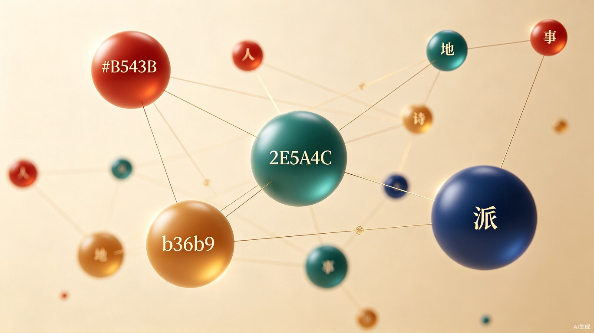

以唐代地图为空间基底、时间轴为滑动线索的
时空文化探索引擎
"从一首诗出发，穿越人、地、时、事，看见一个立体的中国文化世界。"
The Problem
中国拥有浩瀚的古典文献，但普通人接触它们的路径是碎片化的。一首诗、一段典故、一个历史人物——它们散落在不同的工具和介质中，缺乏一张将它们连接起来的网络。我们面对的不仅是信息获取的问题，更是文化理解的结构性障碍。
读一首《静夜思》，你不会知道它写于何时何地。李白那一年在哪里、在做什么、身边有谁——这些语境信息被隔绝在不同的工具和介质中。
文言文、繁体字、缺乏背景知识——每一层都在把人往外推。古典文化变成了一座被锁起来的花园，只有少数受过训练的人才能进入。
即便查到了某首诗的背景，得到的也是孤立的文本加翻译。没有空间感、没有时间线、没有关联网络——文化被压缩成了平面的碎片。
The Product
拾遗不是"搜索唐诗"的工具。它是一个以唐代地图为空间基底、以时间轴为滑动线索的探索引擎。你不再搜索，而是漫游——在地图上点击一座楼，看到横跨百年的故事在时间线上展开。
地图 × 时间——两个维度交叉，构成用户探索文化信息的核心交互框架。
地点 → 时间轴联动。点击黄鹤楼，时间轴自动展开所有发生在那里的历史事件。
锁定年份 → 地图亮起。滑动到744年，看到李白、杜甫、高适分别在哪些城市。
红色虚线连接一生轨迹。在地图上用动态路线还原一个人的生命旅程。
浮动卡片展示3条事件。不过度展示，让用户逐步发现更多信息。
User Journeys
从地点出发、从时间出发、从脚下出发——每种路径都能抵达不同的文化发现。
用户在地图上点击黄鹤楼。时间轴自动展开，显示从孙权建楼到崔颢题诗、李白搁笔、岳飞驻扎——一座建筑浓缩的千年叙事。
用户滑动时间轴到744年。地图亮起三个点——李白在洛阳、杜甫在长安、高适在商丘。点击任一人物，看到红色虚线如何最终将三人汇聚到同一座城。
用户打开定位，地图自动定位到当前位置。系统弹出提示：你所在的位置，唐代有127首诗提到它。用户开始了一场脚踩实地、仰望历史的旅程。
Differentiation

知识图谱将人、地、时、事编织成一张可探索的网络
不只是文本检索——在地图和时间轴上直观地看见文化的空间分布和时间脉络。
两种独特的交叉视角，让用户发现隐藏的关联——同一地点跨越百年的故事，同一时刻不同地点的呼应。
不过度展示，遵循"三层信息架构"原则——概览、详情、深度逐层递进，降低认知负荷。
Data Foundation
拾遗的底层数据融合了多个权威学术数据库，并通过人工标注构建了完整的知识图谱。
哈佛大学主导的权威人物关系数据库，覆盖唐代核心人物的基本信息与社会网络。
提供唐代行政区划与地理坐标，为地图基底提供空间锚点。
涵盖48000余首唐诗的文本、作者与元数据，作为诗词内容的核心来源。
对机器无法自动处理的关联关系、时间定位进行人工验证，确保数据准确性。
Value Proposition
降低古典文化的接触门槛，让普通人也能以直觉而非训诂进入古诗的世界。古籍活化不只是保存，更是让沉睡的文本重新被看见。
研究者不再需要跨多个数据库手动拼接信息。地图 + 时间轴的交互方式让信息发现速度提升数倍，从"搜索"变为"看见"。
文旅场景深度结合：景点AR导览、文化旅行路线推荐、博物馆数字展厅。将抽象的文化资源转化为可体验的产品。
从唐代扩展到全历史时期，从诗词扩展到全部古典文献。拾遗不只是唐诗的地图，而是中国文化的操作系统。
"我们想做的，是把锁打开。"